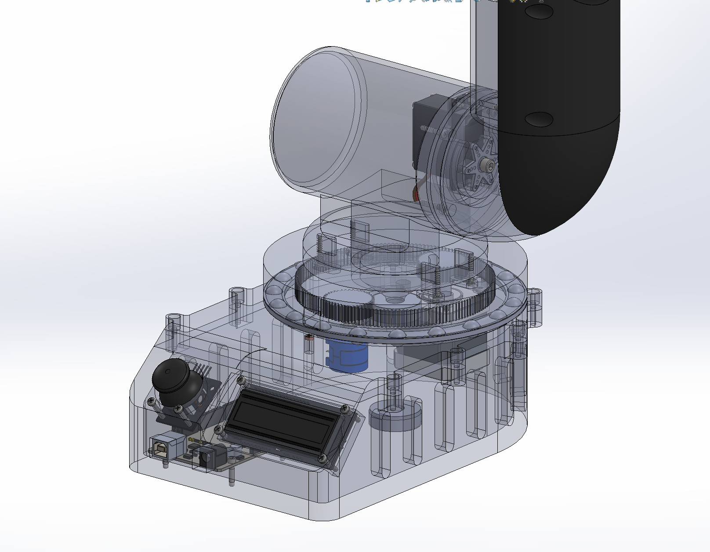
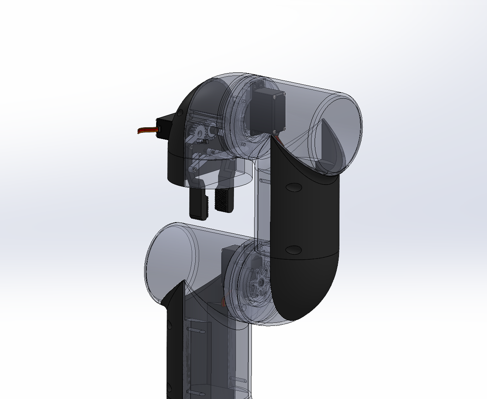
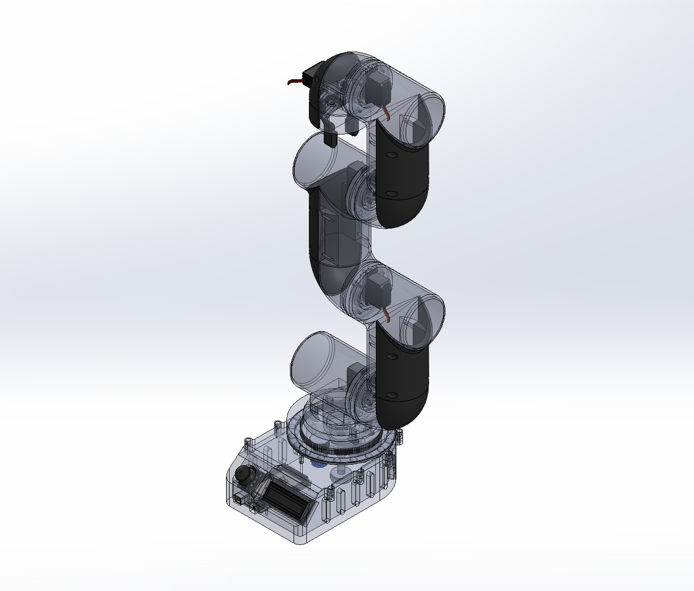
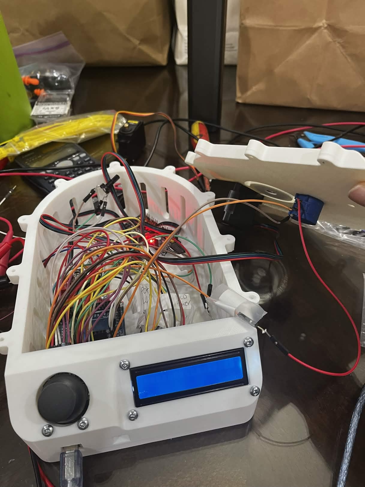

Describe the problem or engineering challenge this project was designed to solve. Be specific — mention constraints, requirements, or real-world needs that drove the design decisions.
Add a second paragraph with more context if needed. What made this problem particularly interesting or difficult?
Explain the approach you took to solve the problem. What design decisions did you make and why? What alternatives did you consider?
Highlight your unique contribution — what was creative, novel, or technically challenging about your solution?





Describe the technical details of your implementation here. What hardware did you use? What software architecture did you design? What algorithms or calculations were central to the system?
Engineers and recruiters will read this section closely. Use precise language — component specs, tolerances, communication protocols, control loops, etc.
Describe the most significant technical challenge you encountered and how you resolved it. Be honest — challenges show real engineering experience.
What would you do differently if you started over? What skills or knowledge did this project give you?